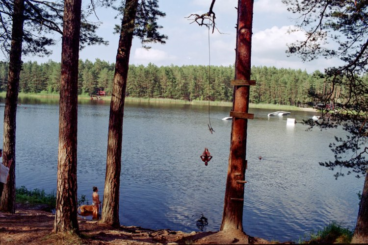

As I said, my name is Arthur.
Originally I am from Latvia, the city of Riga.
Before starting my bachelor's degree at
The Hague University of applied sciences at UXD facultee,
I was engaged in furniture prototyping
and design for over 9 years.
Since I was a kid,
I was very interested in computer games and how they work,
which makes some of them so addictive and interesting,
their design, and what benefits do they bring to society.
It was thanks to computer games,
books, and films that I learned about
absolutely different styles and genres
from cyberpunk to minimalism.
Continuing to develop and learn more
and more interesting aspects and nuances.
Throughout my life, I have acquired
a number of skills such as
Photography(my photos are on the left);
Adobe XD; Unity; Blander; Photoshop;
and many more
Talking about my soft skills - am very
positive and stress-resistant person
who will gladly help you find a solution
for any task on your jorney
